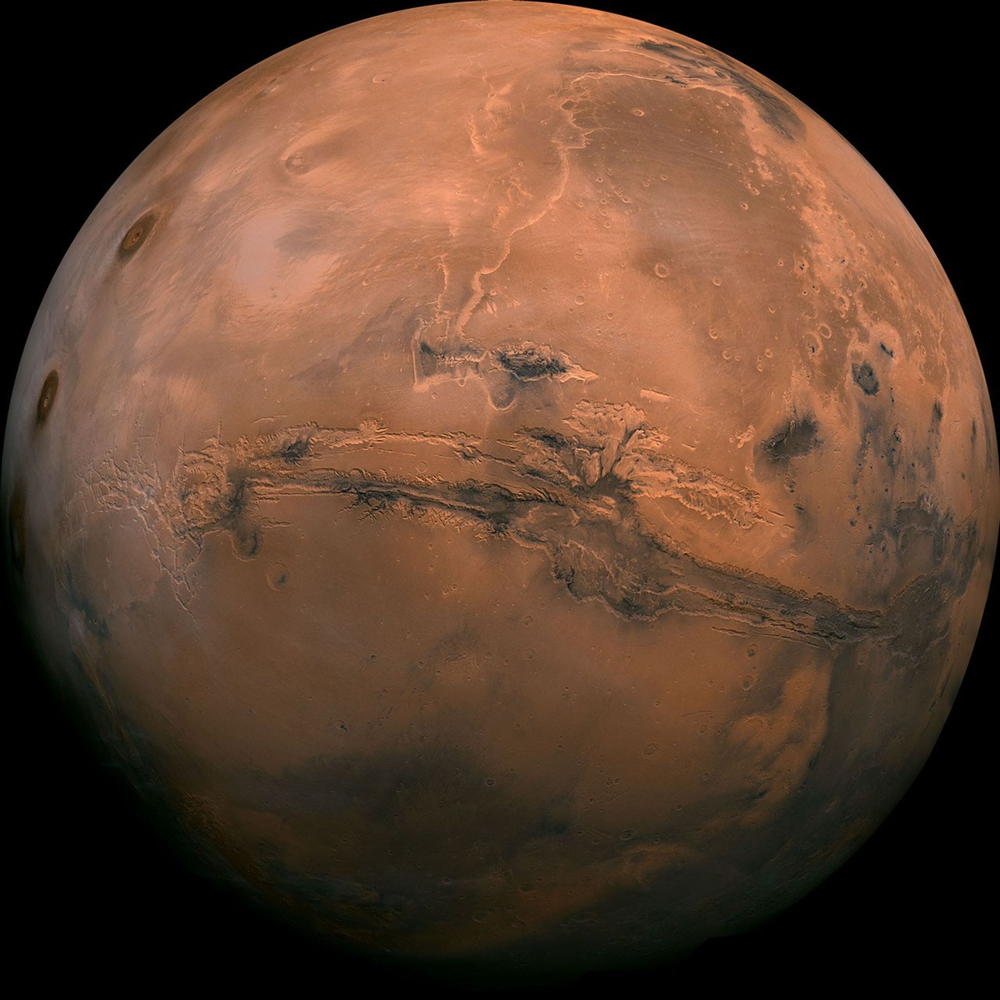

Why
There is no map of Mars detailed enough for a single walk.
~1.5 m
The smallest rock orbit reliably sees. The ones that trip a walker are smaller.
4–22 min
For a message to reach Earth. Mission control can’t guide each step.
~8 h
Of oxygen in a spacesuit. Every step out has to leave enough to walk back.
So we build that map: start from NASA’s orbit data, scout the route from the air, then walk with the way home always in view.
Vesta Scout
Plan a science walk on NASA’s Mars data. A simulated scout helicopter, like NASA’s Ingenuity, flies the route first and reveals the hazards orbit can’t see. Then you walk with the way home always known. Open Vesta Scout
Vesta Vision Early version
Stand on Mars: the same map at eye height, on NASA’s 1 m terrain and HiRISE imagery. Try it inside Vesta Scout with the View button. Later: the whole planet, sharpened by everything our scouts and models learn.